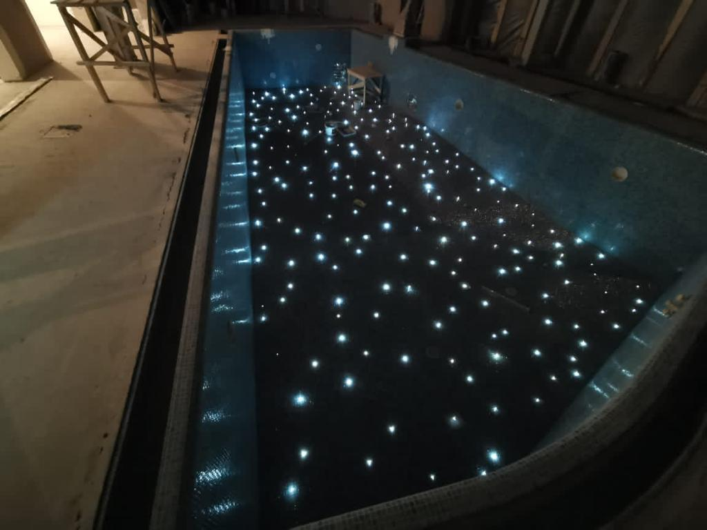

Введение
Звёздное небо в бассейне и SPA-зоне: как создаётся эффект
Представьте вечерний бассейн, где вода спокойная, поверхность мягко отражает свет, а над вами — эффект настоящего звёздного неба. Это не декоративная «подсветка ради красоты», а продуманное световое решение, которое формирует атмосферу приватного SPA-пространства прямо у вас дома.
Звёздное небо в бассейне и SPA-зоне — это инженерный элемент, который работает вместе с чашей, гидроизоляцией, отделкой и системой управления освещением. Его эффект достигается не случайно, а за счёт точного проектирования света, правильного размещения оптоволоконных или LED-точек и грамотной интеграции в конструкцию потолка или зоны отдыха.
Такой запрос часто связан с премиальными проектами, где важна не только функциональность, но и эмоция пространства. При этом важно понимать: за визуальной лёгкостью скрывается полноценная инженерная система — с электрикой, автоматикой, безопасным питанием, влагозащитой и сервисным доступом.

В современных проектах бассейнов и SPA-зон «звёздное небо» всегда рассматривается как часть общей системы: освещение, гидравлика, вентиляция, закладные элементы и техническое помещение должны быть согласованы ещё на этапе проектирования. Это снижает риск переделок и позволяет получить стабильный, безопасный и долговечный результат.
Для частного дома особенно важно, чтобы система работала тихо, надёжно и не требовала постоянного внимания. Именно поэтому такие решения всегда закладываются в проект заранее — вместе с расчётом оборудования, сценариев освещения и будущего обслуживания.
Для комплексного понимания темы изучите также материалы: бетонная чаша, стоимость бассейна, проектирование, обслуживание бассейна, гидроизоляция и выбор концепции перелив/скиммер.
Инженерия
Техническая часть и эксплуатация «звёздного неба» в бассейне и SPA-зоне
Эффект «звёздного неба» в бассейне и SPA-зоне выглядит как декоративное решение, но по факту это полноценная инженерная система освещения, которая работает в связке с конструкцией чаши, отделкой и общей архитектурой пространства.
В основе технологии — точечные источники света (чаще оптоволоконные или LED), которые закладываются в потолок SPA-зоны или архитектурные элементы вокруг бассейна. Их задача — создавать равномерное мягкое свечение без бликов и перегрузки пространства, формируя эффект глубины и «ночного неба» над водой.
При проектировании важно учитывать не только визуальный эффект, но и техническую часть: как будут проходить кабельные линии, где размещается источник питания, каким образом защищается система от влаги, как обеспечивается доступ к обслуживанию и замене элементов без разрушения отделки.
Звёздное небо всегда включается в общую инженерную концепцию объекта. Оно должно быть согласовано с гидроизоляцией, вентиляцией, электрикой, системой управления освещением и техническим помещением бассейна. Ошибки на этом этапе приводят к сложному и дорогому обслуживанию в будущем.
С точки зрения эксплуатации система считается одной из самых стабильных: при правильном проектировании она работает годами без вмешательства, не требует постоянной настройки и легко интегрируется в сценарии «вечерний отдых», «SPA-режим» или «ночная подсветка бассейна».
Для частных домов это решение особенно ценно: бассейн и SPA-зона становятся не просто функциональным объектом, а пространством с атмосферой приватного курорта, где свет работает так же важен, как вода и архитектура.
Смета и бюджет
Как считать стоимость «звёздного неба» в бассейне и где возникают риски
Эффект «звёздного неба» в бассейне и SPA-зоне — это не просто декоративная подсветка, а часть инженерной системы освещения, которая интегрируется в проект ещё на этапе проектирования. Поэтому его стоимость всегда зависит не только от количества световых точек, но и от общей архитектуры объекта.
| Позиция | Что влияет на цену | Рекомендация |
|---|---|---|
| Освещение «звёздное небо» | Площадь потолка SPA-зоны, количество световых точек, тип системы (LED или оптоволокно) | Проектировать заранее вместе с отделкой и электрикой |
| Электрика и питание | Схема управления, защита от влаги, размещение блока питания | Выносить оборудование в доступное техническое помещение |
| Интеграция в бассейн и SPA | Сложность конструкции, высота потолков, материалы отделки | Согласовывать с гидроизоляцией и вентиляцией |
| Обслуживание системы | Доступ к точкам света, возможность замены без демонтажа отделки | Предусматривать сервисный доступ на этапе проекта |
Как формируется корректная стоимость
- Сбор исходных данных
Архитектура дома, план SPA-зоны, режим использования бассейна, требования к освещению и визуальному эффекту. - Согласование спецификации
Подбор системы освещения, электрики, автоматизации и интеграции с общим проектом бассейна. - Утверждение календарного плана
Разбивка работ по этапам с привязкой к строительству чаши, отделке и инженерным системам.
Основные риски возникают не в самой системе «звёздного неба», а в её неправильной интеграции: если освещение закладывается после отделки, это приводит к переделкам, удорожанию и сложному обслуживанию.
В грамотно спроектированном бассейне система работает незаметно: свет мягко формирует атмосферу, не требует постоянного вмешательства и служит частью общей инженерной концепции объекта.
Практика реализации «звёздного неба» в бассейне и SPA-зоне
Опыт реализации проектов показывает, что итоговый результат с эффектом «звёздного неба» зависит не от самой системы освещения, а от того, насколько согласованы все этапы проекта. Освещение работает корректно только тогда, когда оно встроено в единую инженерную логику объекта.
Речь идёт о связке всех ключевых разделов: проектирование бассейна, строительство чаши, монтаж оборудования, гидроизоляция, отделка, система фильтрации воды, автоматизация и последующее обслуживание. Если хотя бы один этап выполнен без учёта остальных, визуальный эффект теряет стабильность, а эксплуатация усложняется.
С точки зрения инженерного подхода «звёздное небо» — это не отдельный декоративный элемент, а часть общей системы освещения, которая должна быть заложена в проекте одновременно с электрикой, вентиляцией и техническим помещением бассейна.
Коммерчески грамотный проект всегда строится на прозрачной смете, понятной структуре работ и измеримых параметрах качества воды и эксплуатации. Это позволяет заранее оценить не только стоимость строительства, но и будущую стоимость владения объектом.
Для собственника такой подход означает предсказуемость: отсутствие скрытых расходов, стабильную работу оборудования и понятный график сервисного обслуживания. В результате бассейн со «звёздным небом» становится не сложным техническим объектом, а комфортным пространством для отдыха с контролируемыми затратами и понятной эксплуатацией.
Ошибки клиентов
Чего избегать при реализации «звёздного неба» в бассейне и SPA-зоне
Эффект «звёздного неба» в бассейне и SPA-зоне выглядит как декоративное решение, но на практике это сложная инженерная система. Именно поэтому ошибки на этапе проектирования и строительства приводят не только к потере визуального эффекта, но и к дорогим переделкам всей конструкции.
Ниже — ключевые ошибки, которых важно избегать при реализации системы освещения «звёздное небо» в бассейне.
01. Экономия на скрытых инженерных узлах
Наиболее критичная ошибка — попытка сэкономить на элементах, которые потом невозможно заменить без разрушения отделки. Это включает гидроизоляцию, закладные элементы, кабельные трассы и обвязку системы.
В случае бассейна любая ошибка в скрытых узлах приводит к протечкам, отказу системы освещения или дорогостоящему демонтажу отделки.
02. Отсутствие полноценного проекта
Реализация «по месту» без рабочей документации почти всегда приводит к несогласованности между электрикой, отделкой и конструкцией чаши.
Без проекта невозможно точно рассчитать расположение световых точек, нагрузку на сеть, доступ к обслуживанию и интеграцию с системой управления бассейном.
03. Ошибки в расчёте технического помещения и вентиляции
Даже при идеальной системе освещения результат может быть испорчен неправильной организацией технического пространства. Перегрев оборудования, высокая влажность и отсутствие вентиляции сокращают срок службы всей инженерии.
Техническое помещение должно проектироваться одновременно с бассейном, а не после него.
04. Покупка оборудования без гидравлического и инженерного расчёта
Частая ошибка — выбор оборудования «по мощности» или совету поставщика без привязки к реальному объёму бассейна и сценарию эксплуатации.
Это приводит либо к избыточным затратам, либо к недостаточной производительности, когда система не справляется с нагрузкой и требует постоянной настройки.
05. Отсутствие интеграции с общей системой бассейна
«Звёздное небо» должно быть частью единой инженерной концепции: освещение, фильтрация, автоматика, вентиляция и электрика должны работать согласованно.
Если система проектируется отдельно, без учета бассейна как целого объекта, это почти всегда приводит к сложной эксплуатации и нестабильному результату.
Итог прост: эффект «звёздного неба» работает только тогда, когда он заложен в проекте вместе со всей инженерией бассейна. В противном случае он превращается в источник проблем, а не в элемент премиального комфорта.
FAQ
Частые вопросы о «звёздном небе» в бассейне и SPA-зоне
Эффект «звёздного неба» в бассейне и SPA-зоне часто воспринимается как декоративный элемент, но на практике это часть инженерной системы освещения, которая требует проектирования, правильного подключения и согласования с общей конструкцией бассейна.
Сколько занимает реализация «звёздного неба» под ключ?
Срок реализации обычно привязан к строительству всего бассейна и SPA-зоны. В среднем это 3–6 месяцев, в зависимости от стадии объекта, сложности инженерии, типа отделки и необходимости интеграции освещения в потолочные конструкции или архитектуру помещения.
Можно ли снизить бюджет без потери качества эффекта?
Да, стоимость можно оптимизировать за счёт выбора типа системы освещения (LED или оптоволокно), количества световых точек и сценариев управления. При этом критически важно не экономить на скрытой инженерии: электрике, гидроизоляции, закладных элементах и системе питания.
Какие документы входят в проект «звёздного неба»?
Полноценное проектирование включает:
- пояснительную записку и общую концепцию освещения;
- рабочие чертежи размещения световых точек;
- схему электрики и подключения;
- интеграцию с гидравликой и инженерией бассейна;
- спецификацию оборудования;
- план обслуживания и доступа к системе.
Нужно ли обслуживание системы «звёздного неба»?
В большинстве случаев система не требует регулярного вмешательства, если она правильно спроектирована. Однако важно учитывать доступ к узлам питания и возможность замены элементов без демонтажа отделки.
Когда лучше закладывать «звёздное небо» в проект?
Оптимально — на этапе проектирования бассейна и SPA-зоны. Это позволяет заранее предусмотреть электрику, закладные элементы, вентиляцию и техническое помещение без риска переделок.
Чем раньше система интегрирована в проект, тем стабильнее работает освещение, безопаснее эксплуатация и ниже риск дополнительных затрат в будущем.
CTA
Запросить коммерческое предложение
Подготовим смету, подберем оборудование и предложим реалистичный план строительства бассейна под ключ.